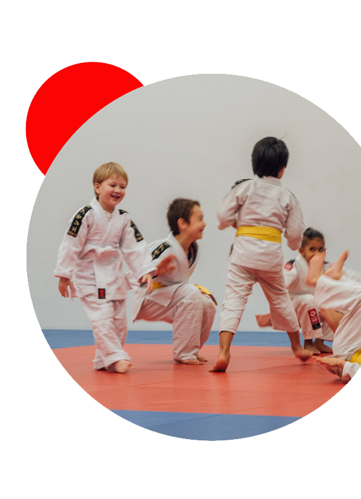
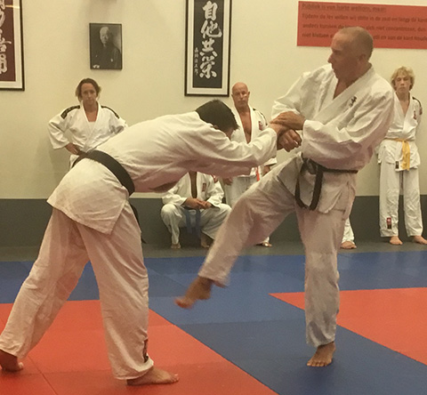
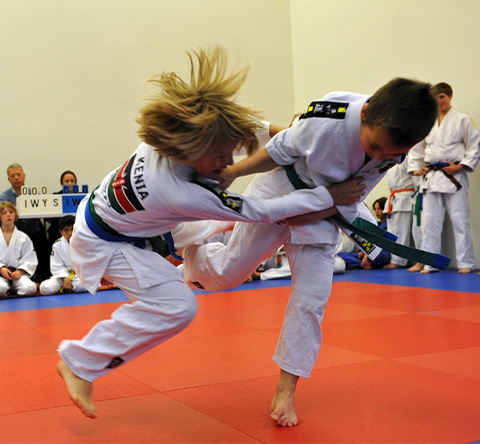

Welkom bij de BENOORDENHOUTSE JUDOSCHOOL "JOHN F. KLEIJN"
Onze school, gevestigd in de wijk Benoordenhout in Den Haag,
biedt lessen in de volgende vechtsporten:
- judo voor kinderen vanaf 3 jaar en volwassenen
- jiujitsu voor kinderen vanaf 7 jaar en volwassenen
- karate voor kinderen vanaf 7 jaar en volwassenen
- aikido (een vorm van aikido) vanaf 15 jaar

Schrijf je nu in voor een Proefles!
Als u interesse heeft om bij ons te komen sporten of als uw kind geïnteresseerd is, vul dan geheel vrijblijvend
dit formulier in.
John Kleijn (6e dan) is al meer dan 30 jaar judoleraar. Na voor een aantal verenigingen les te hebben
gegeven richtte hij in 1994 de Benoordenhoutse Judoschool op. Zijn belangrijkste judoleraar was Jaap Hoogendam. Naast
judoleraar is hij werkzaam als wiskundedocent. Thans aan het Koninklijk Conservatorium, maar voorheen o.a. op het
Aloysius College, het Gymnasium Haganum, het HML en privé instituut Vrijbergen.
Binnen de Judo Bond Nederland heeft hij verschillende functies bekleed: onder andere lid van de Nationale commissie
bijscholing en voorzitter van de Districts Graden Commissie Judo. Thans is hij lid van de Nationale Commissie
Opleidingen Judoleraren. Daarnaast is hij al jarenlang docent en examinator bij de lerarenopleidingen van de Judo Bond
Nederland. Ook heeft hij namens de Judo Bond Nederland regelmatig een bezoek gebracht aan Suriname om daar de
judoleraren les te geven en bij te scholen.
Nieuws

Op zondag 17 september 2023 heeft jiujitsu leraar Theo van Pomeren heeft zijn 6e dan jiujitsu behaald. Wij en zijn
leerlingen zijn blij en trots!

Jiujitsu leraar Peter van Deventer is geslaagd voor de opleiding jiujitsu leraar B. Daarmee heeft hij nu de hoogste
lesbevoegdheid die er is voor zowel judo als jiujitsu. Gefeliciteerd!